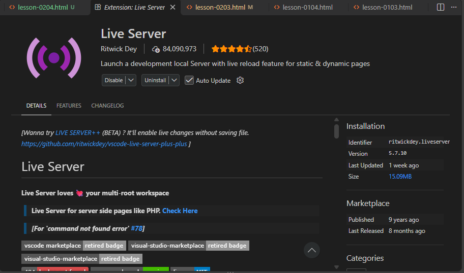
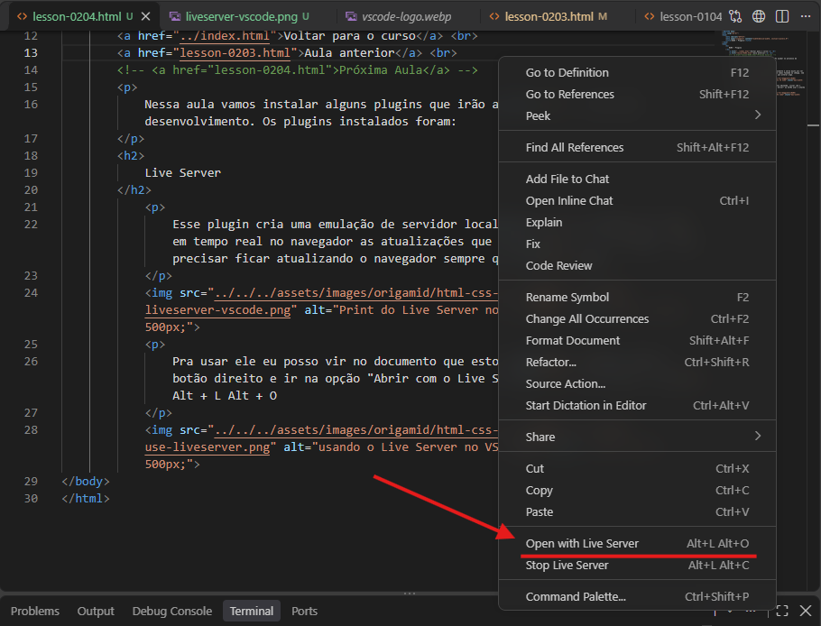
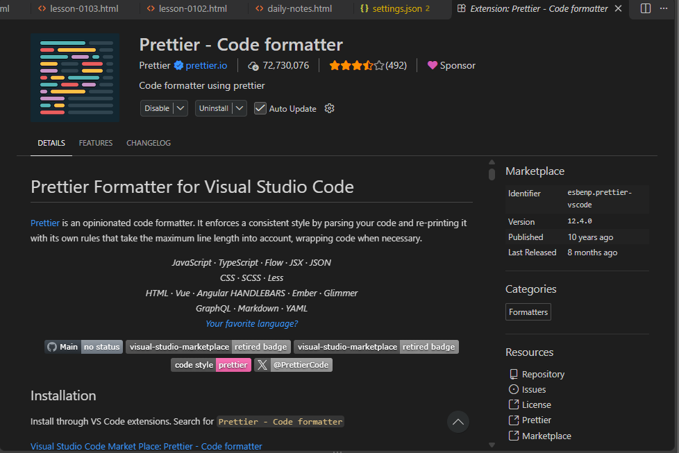

Nessa aula vamos instalar alguns plugins que irão ajudar no processo de desenvolvimento. Os plugins instalados foram:
Esse plugin cria uma emulação de servidor localmente e serve muito pra ver em tempo real no navegador as atualizações que vamos fazendo no código, sem precisar ficar atualizando o navegador sempre que alterar algo.

Pra usar ele eu posso vir no documento que estou editando, clicar com o botão direito e ir na opção "Abrir com o Live Server" ou então usar o atalho Alt + L Alt + O

O Prettier serve pra facilitar o processo de identação do código. É usado pra deixar o código mais organizado e facilitar a leitura e identificação de cada componente.
No curso o professor diz que pro caso dos documentos HTML o Prettier não é tão bom, então ele aplica algumas configurações pra manter o formatador padrão do VS Code para os documentos .html e o Prettier para os demais arquivos. Não vou entrar em detalhes sobre as configurações que foram feitas pois não é o foco, mas quem sabe algum dia eu atualize aqui com essas informações.
